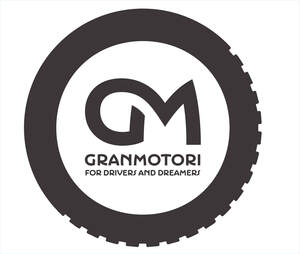

Trade Mark Journal No.2026/008 20 February 2026
UK00004276094 10 October 2025 (6,14,16,18,25,35,41)

- Class 6
- Artistic objects of common metal; Figurines of common metal; Statuettes of common metal; Metal (Common -) commemorative plaques; Metal wall panels; Advertising boards [metal hoardings]; Metal cases; Metal containers for storage; Model cars [ornaments] made of common metal; trophies of common metal.
- Class 14
- Jewellery articles; Brooches [jewelry]; rings [pendants]; chains [jewellery]; medals; commemorative medals; badges of precious metal; Trophies of precious metals; coins; watches; chronometers; key rings; pendants; Key rings and key chains, and charms therefor; Key chains [trinkets or fobs]; Ornaments [statues] made of precious metal; scale models [ornaments] of precious metal; commemorative plates of precious metal; commemorative plaques; Insignias of precious metal; Decorative boxes made of precious metal; Collectible coins; Metal trinkets.
- Class 16
- Printed matter; Printed publications; Agenda books; diaries; lists; address books; directories; books; Periodical magazines; newspapers; Information booklets; Events programmes; printed programmes; manuals; catalogues; printed guides; guide books; brochures; prospectuses; photographs; advertising posters; Framed photographs; paper containers; binders; folders; Covers for books; albums; atlases; Printed wall maps; calendars; stationery; paperweights; writing pads; notepaper; writing paper; envelopes [stationery]; Printed paper labels; Stickers [decalcomanias]; Car stickers; Adhesive transfers; bookmarks; index cards [stationery]; gift vouchers; tickets; greeting cards; Collectible cards; stamps; paper coasters; cards; writing sets; drawing instruments; Office stationery; printed teaching materials; commemorative books; paper flags; paper banners; paper napkins; artists’ materials; writing instruments; packaging materials; Office paper stationery; Document holders [stationery].
- Class 18
- Leather and imitations of leather; trunks and travelling bags; cases; Articles of luggage; bags; handbags; travelling bags in fabric; pouches; duffel bags; wallets; carrying cases; backpacks; waist bags; umbrellas and parasols.
- Class 25
- Casual clothing; Formalwear; driver’s clothing; underwear; sportswear; sports jerseys; sports jackets; sports tunics; racing suits; sports socks; knee socks; sports bibs; sweatshirts; hoodies; polo shirts; sport T-shirts and shorts; sports shoes; Sports footwear; sandals; Sports caps and hats; neck warmers; gloves; bathrobes; hats.
- Class 35
- Promotion of goods and services through sponsorship of sports events; Promotion of goods and services through sponsorship of international sports events; public relations; Organisation of exhibitions and events for commercial or advertising purposes; Retail services relating to sporting goods; Retail services in relation to sporting equipment; Retail services in relation to sporting articles; Online retail services relating to clothing; advertising, marketing and promotional services; marketing; advertising; promotion services; Conducting, arranging and organizing trade shows and trade fairs for commercial and advertising purposes; business administration consultancy; auctioneering; business management services; business administration services; Corporate communications services; Distribution of printed promotional material by post; Business administration and management.
- Class 41
- Arranging and conducting of educational events; Organisation of conferences, exhibitions and competitions; Live performance services; education and training; Rental services relating to equipment and facilities for education, entertainment, sports and culture; Organization, arranging and conducting of sports competitions; Entertainment services provided at a motor racing circuit; organisation of automobile races; Provision of information relating to motor racing; Organising of motor racing events; Sports education services; Sport camps; Sports and fitness; sporting and cultural activities; Ticket reservation and booking services for education, entertainment and sports activities and events; Organisation of events for cultural, entertainment and sporting purposes; Organising of sporting events, competitions and sporting tournaments; Arranging and conducting award ceremonies; Rental of sports equipment; Organisation of sports tournaments; Instruction in sports; Digital video, audio and multimedia entertainment publishing services; Editorial consultation; photography services.
Silvia Dorigo
Mauro Dorigo
Representative: Marco Mario Locatelli